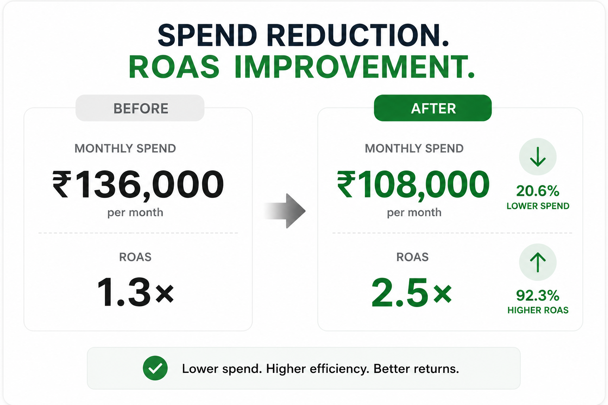
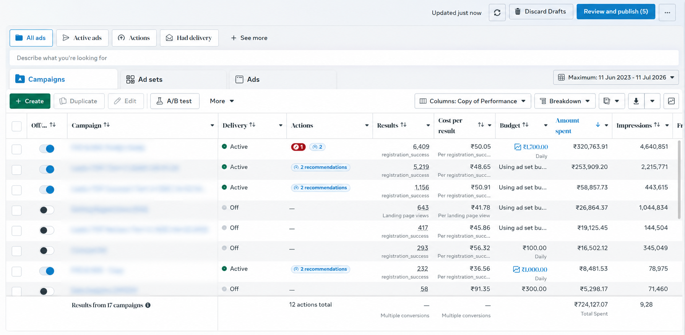
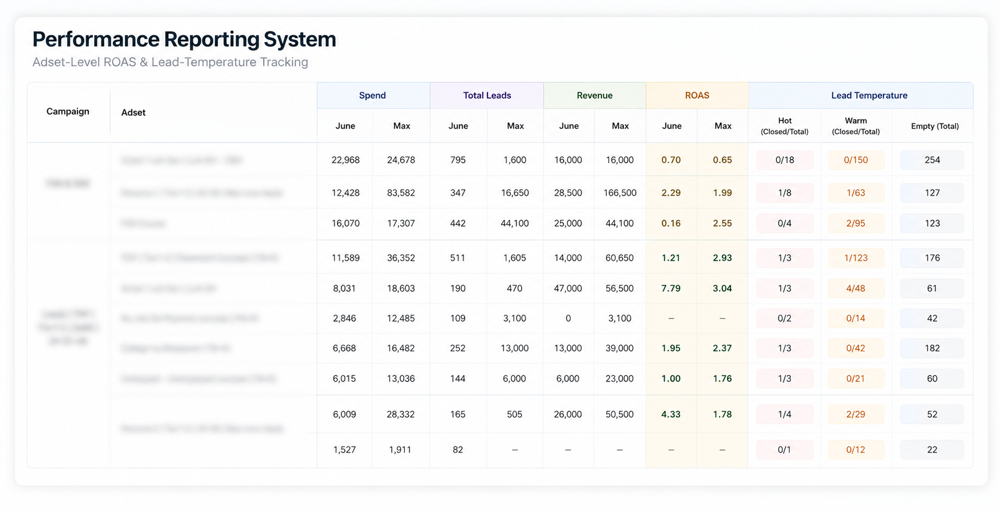

How we took one of our clients from an underperforming account to 2.4x ROAS and climbing — while cutting monthly ad spend by roughly 20%. Not by spending more. By finding the leaks first.
Skip to the numbersHigh-ticket offer · Long sales cycle · Meta paid media
A high-ticket education client came to us with an account stuck around 1.3x ROAS — and pressure to spend its way out.
The obvious move was to take the budget, rebuild the campaigns, and buy more traffic. We audited instead — and the audit showed the leaks weren't in the ad account at all. They were in the offer, the landing experience, and the follow-up — the places more ad spend can't reach.
We mapped the program, the offer, the competitors, and the funnel end to end. The verdict was clear: fix the base first, or scale would only make the leaks more expensive.
The offer's strongest objection-killer — a refundable security deposit — sat far below the fold. Prospects were bouncing on a fear the offer had already answered. Whatever you sell, your best proof can't work where nobody reads it.
GA4 behaviour data showed exactly which sections visitors engaged with — and they were buried under sections people skipped. The page's order reflected internal opinion, not how buyers actually read it.
The social proof on display was the kind a skeptical buyer can't verify. In a high-ticket purchase, trust does most of the selling — unverifiable proof is a leak, not an asset.
High ticket plus low closure volume meant ROAS took months to "prove" anything — and months of budget went with it. The account had spend data, but no early signal of lead quality.
Selected, not exhaustive — each move demonstrates a different capability, and none of them started with "increase the budget."
The credibility muscle.
We rebuilt the landing experience around the real friction. The refundable-security-deposit term moved to the first screen — killing the "I won't pay before I see results" objection where it forms, not later in a sales call. Then we reordered the page using GA4 behaviour data, moving the sections buyers actually engaged with to the top. And where the social proof couldn't be verified, we replaced it with reviews a skeptical buyer can check — verified Google and Quora reviews.
Judge an adset without waiting on closures.
For a high-ticket, low-closure-volume account, ROAS alone is too slow and too noisy to steer by — by the time it "proves" an adset is weak, the budget is already spent. So we built a lead-classification system: every lead is scored on the sales team's first impression, and those scores roll up to the adset level.
Catch drift early — spend less finding out.
Weekly and monthly reporting built to flag funnel drift early, instead of letting a problem run until it breaks the numbers. The result: monthly spend cut from ₹1,36,000 to ₹1,08,000 — roughly 20% — while revenue and the core metrics kept rising. Reporting as a spend-efficiency tool, not homework.
Real dashboards, real reports, real spend. Nothing here is a projection — every figure below was realized in the account.
Monthly cost per 1,000 impressions (CPM) vs cost per lead (CPL), January–June.
| Month | CPM (₹) | CPL (₹) |
|---|---|---|
| January | 85 | 105 |
| February | 125 | 75 |
| March | 110 | 50 |
| April | 120 | 47 |
| May | 155 | 48 |
| June | 125 | 37 |



2.4x is the realized figure, not a projection — and the latest cohort is still closing, so it's a floor, not a ceiling. All of it on roughly 20% less monthly spend than when we started.
The strongest signal isn't a number, though. The client started us on paid media — and has since handed over their entire social presence, Instagram to YouTube. A client expanding scope says more than any testimonial we could quote.
Every number on this page started with the same audit we're offering you. We'll go through your funnel end to end — offer, targeting, follow-up — and send you a written diagnosis of where growth is leaking. If the problem isn't in the ads, we'll tell you that too.
The audit is step one of the method — you see the diagnosis before you commit to anything.
Worst case: you get a second pair of expert eyes on your funnel and keep every finding. Best case: you find the leak that's been capping your growth.